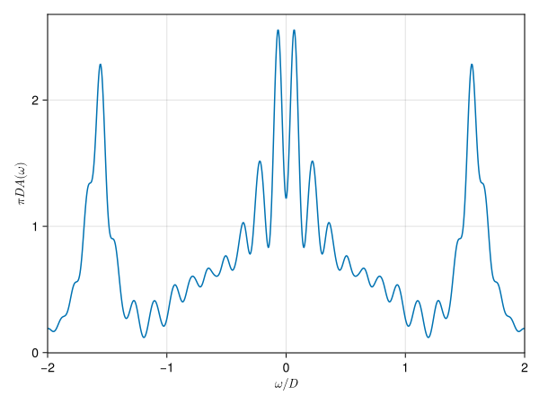
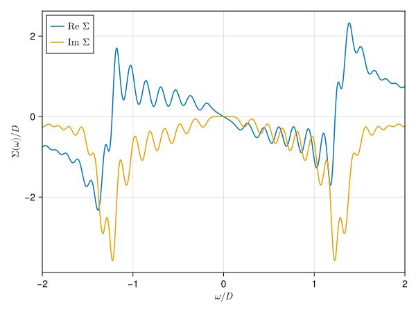

Tutorial
We first load necessary packages.
using CairoMakie
using Fermions
using LinearAlgebra
using RAS_DMFTNon-interacting Bethe lattice in infinite dimensions
The non-interacting density is the Wigner semicircle distribution
\[ρ(ω) = \frac{2}{πD^2}\sqrt{D^2 - ω^2}\]
from which we can define a non-interacting Green's function $G(ω)$ with the relation
\[ρ(ω) = -\frac{1}{π}\mathrm{Im}G(ω).\]
Let us plot it:
D = 1.0 # half-bandwith
W = range(-2 * D, 2 * D; length = 1_000) # frequency grid
g = greens_function_bethe_analytic(W, D)
f = Figure();
ax = Axis(f[1, 1]; xlabel = L"ω/D", ylabel = L"DG")
lines!(ax, W, real(g); label = L"\mathrm{Re}~G_0")
lines!(ax, W, imag(g); label = L"\mathrm{Im}~G_0")
axislegend(ax; position = :lt)
xlims!(ax, first(W), last(W))
For calculations, we need to discretize this to $N$ points:
N = 51 # number of points
grid = range(-D, D; length = N) # linear grid (others are possible)
G0 = greens_function_bethe_grid(grid)PolesSum{Float64, Float64} with 51 polesThis returns a PolesSum instance which only stores locations $ϵ_i$ and weights $w_i$.
f = Figure();
ax = Axis(f[1, 1]; xlabel = "locations", ylabel = "weights")
plot!(ax, locations(G0), weights(G0))
We can see that this looks like a discrete version of our semicircle. Our spectrum is now
\[A(ω) = ∑_i w_i δ(ω - ϵ_i).\]
If we introduce some broadening, this should look like the continuous one. Lorentzian broadening is characterized by $δ$
\[A(ω) = ∑_i w_i \frac{1}{π}\frac{δ}{(ω -ϵ_i)^2 + δ^2},\]
Gaussian one by $σ$
\[A(ω) = ∑_i w_i\frac{1}{\sqrt{2πσ^2}}\exp\left(-\frac{(ω - ϵ_i)^2}{2σ^2}\right).\]
δ = σ = 0.04
f = Figure();
ax = Axis(f[1, 1]; xlabel = L"ω/D", ylabel = L"πDA(ω)")
lines!(ax, W, -imag(g); label = "exact", color = :gray, linewidth = 4)
lines!(ax, W, -imag(evaluate_lorentzian(G0, W, δ)); label = "Lorentzian")
lines!(ax, W, -imag(evaluate_gaussian(G0, W, σ)); label = "Gaussian")
axislegend(ax; position = :lt)
xlims!(ax, first(W), last(W))
DMFT step
For all following calculations we set our unit of energy to $D=1$.
Impurity
Values for the half-filled impurity. A value of $U/D=2.0$ will generate a strongly correlated metal.
U = 2.0 # Coulomb interaction
μ = U / 2 # chemical potential
ϵ_imp = -μ # energy level for half-filling-1.0Restrictions for our active space.
L = 1 # number of chain sites to be treated exactly
p = 2 # order of excitations for remaining chains2Operators for exact part. This is necessary to introduce the interacting part and Hartree term. One can also introduce other operators, e.g., $S_z$, $S^2$ and measure their expectation values.
fs = FockSpace(Orbitals(2 + 2 * L), FermionicSpin(1 // 2))
c = annihilators(fs)
n = occupations(fs)
H_int = U * n[1, 1 // 2] * n[1, -1 // 2] # interacting Hamiltonian
d_dag = c[1, -1 // 2]' # d_↓^†
q_dag = H_int * d_dag - d_dag * H_int # auxiliary operator q_↓^† = [H_int, d^†]
# measure these on ground state
O_Σ_H = q_dag' * d_dag + d_dag * q_dag' # Operator for Hartree term
d_occ = n[1, 1 // 2] * n[1, -1 // 2] # double occupationFermions.Operator{Int64, Fermions.FockSpaces.FockSpace{UInt64, UInt64, Tuple{Fermions.FockSpaces.Orbitals, Fermions.FockSpaces.FermionicSpin}}, Vector{Fermions.Terms.Term{Int64, UInt64, UInt64}}} for 8 flavours (1 terms):
1 n[1, -1//2] n[1, 1//2]Hybridization function
On the Bethe lattice, the hybridization function $Δ$ is nothing more than a rescaled Green's function
\[Δ(ω) = \frac{D^2}{4} G(ω).\]
We can create one using
n_bath = 51 # number of bath sites
grid = range(-4 * D, 4 * D; length = N) # linear grid
Δ0 = hybridization_function_bethe_grid(grid)
remove_zero_weight!(Δ0)PolesSum{Float64, Float64} with 13 polesHere, we set our grid to $[-4D, 4D]$. This will initially create poles with zero weight. Due to the Coulomb interaction $U$, spectral weight will move to higher frequencies, such that poles with initially no weight will obtain a finite value in successive calculations.
Ground state
We can then calculate the ground state up to a user-given variance of the Hamiltonian $\mathrm{var}(H)$. Next to the bare level $ϵ_\mathrm{imp}$ entering the Hamiltonian, the mean-field level $ϵ_\mathrm{mf}$ selects the natural impurity orbital basis. Both vanish here, because the system is particle-hole symmetric at half filling.
var = 1.0e-10
H, E0, ψ0 = init_system(Δ0, H_int, ϵ_imp, 0, L, L, p, var);Given our ground state, we can calculate expectation values with LinearAlgebra.dot.
dot(ψ0, d_occ, ψ0) # expectation value
Σ_H = dot(ψ0, O_Σ_H, ψ0) # Hartree term, should be U/2 = 1.01.0000000000000053Block correlator
Shift to create diagonal matrices later.
q_dag_tilde = q_dag - Σ_H * d_dag
O_plus = [q_dag_tilde, d_dag] # for C+
O_minus = map(adjoint, O_plus); # for C-As we have two operators as input, we will create $2×2$ block correlators. If we use $n$ Krylov steps, each will have $2n$ poles.
n_kryl = 50
C_plus = correlator_plus(H, ψ0, O_plus, n_kryl)
C_minus = correlator_minus(H, ψ0, O_minus, n_kryl)
C = transpose(C_minus) + C_plusPolesSumBlock{Float64, Float64} with 200 poles of size 2×2We can plot the spectrum. The Green's function is the $[2,2]$ component.
G = PolesSum(C, 2, 2)
f = Figure();
ax = Axis(f[1, 1]; xlabel = L"ω/D", ylabel = L"πDA(ω)")
lines!(ax, W, -imag(evaluate_gaussian(G, W, σ)))
xlims!(ax, first(W), last(W))
Self-energy
Here, we use the improved symmetric estimator[Kugler2022], which is evaluated as a Schur complement.
Σ = self_energy_schur(C)
Σ = PolesSum(Σ, 1, 1)
sigma = evaluate_gaussian(Σ, W, σ)
f = Figure();
ax = Axis(f[1, 1]; xlabel = L"ω/D", ylabel = L"Σ(ω)/D")
lines!(ax, W, real(sigma); label = L"\mathrm{Re}~Σ")
lines!(ax, W, imag(sigma); label = L"\mathrm{Im}~Σ")
axislegend(ax; position = :lt)
xlims!(ax, first(W), last(W))
We can calculate the quasiparticle weight
\[\begin{aligned} Z &= \left(1 - \left.\frac{∂\mathrm{Re}~Σ}{∂ω}\right|_{ω=0}\right)^{-1} \\ &= \left(1 + \sum_i \frac{w_i}{ϵ_i^2}\right)^{-1} \end{aligned}\]
directly on the real axis without the use of a difference quotient. Due to poles at $ϵ_i≈0$ this will diverge, and poles with small weight need to be ignored. This is controlled by the second parameter.
quasiparticle_weight(Σ; tol = sqrt(eps()))0.4353854000821881Update hybridization
At the end of each DMFT step, we have to update the hybridization function using the new self-energy.
Δ = update_hybridization_function(Δ0, μ, Σ_H, Σ)PolesSum{Float64, Float64} with 2906 polesAs this function has too many poles to be computationally feasible, we put them onto our initial grid
Δ_grid = to_grid(Δ, grid)PolesSum{Float64, Float64} with 51 polesWe can then put this as our next input and continue at Ground state.
This page was generated using Literate.jl.
- Kugler2022Improved estimator for numerical renormalization group calculations of the self-energy Phys. Rev. B. 105, 245132 (2022)